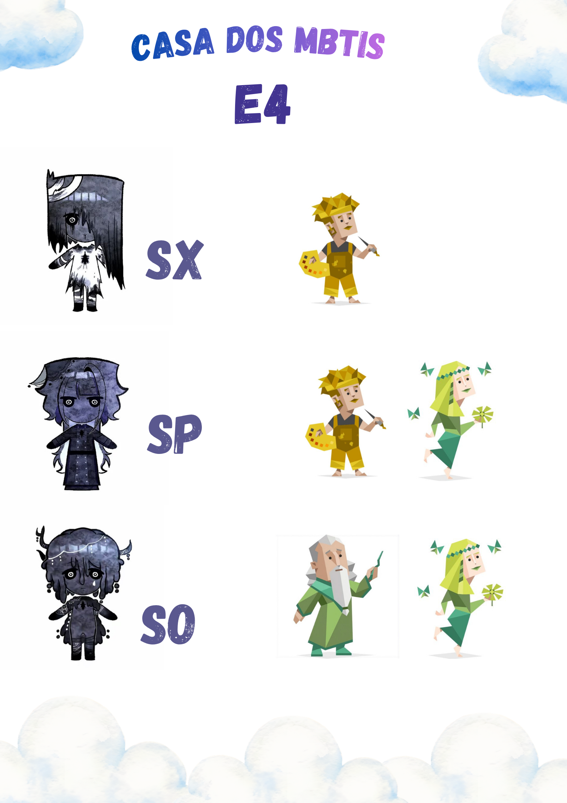
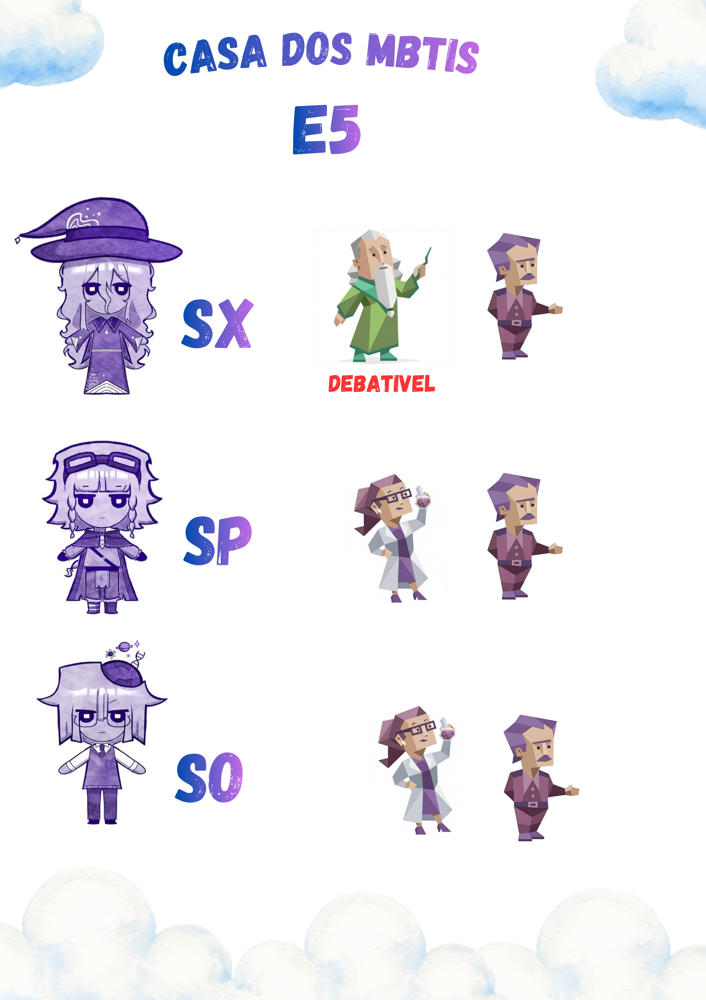
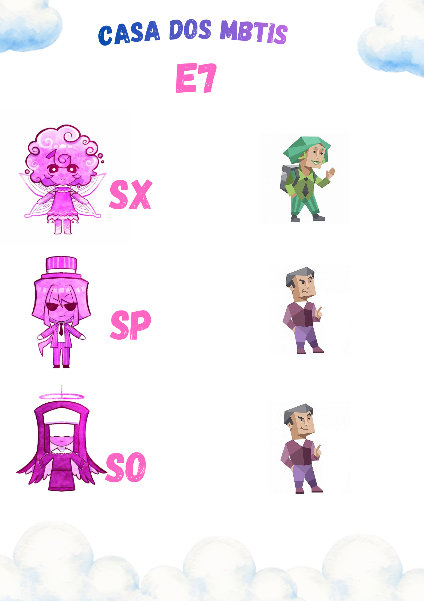
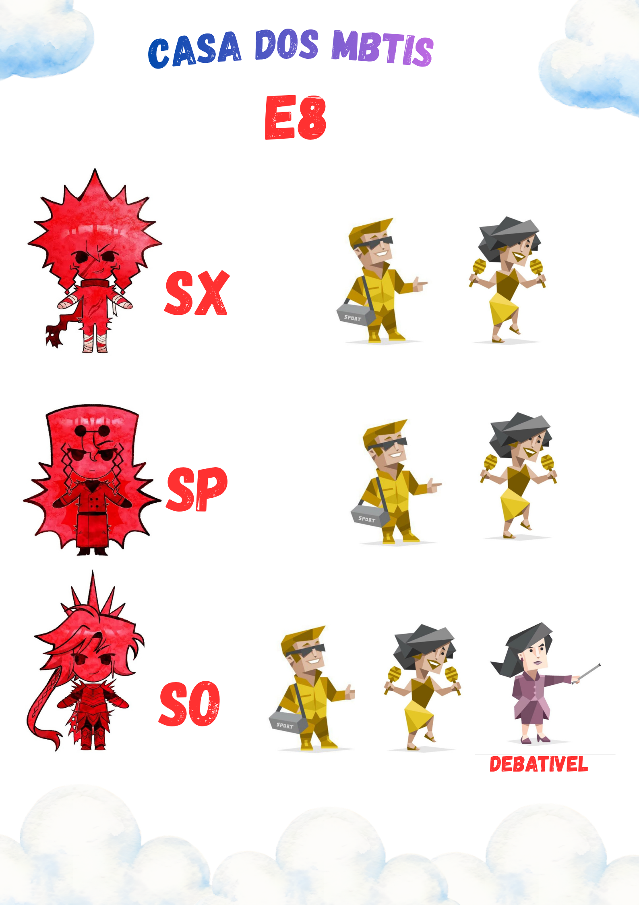

CORRELAÇÕES MBTI × ENEAGRAMA
Uma biblioteca de correlações entre os tipos do MBTI e os subtipos do Eneagrama, construída a partir dos estudos, discussões e debates da comunidade Casa dos MBTIs.
Sobre nossas correlações
As correlações apresentadas nesta página foram elaboradas e debatidas pela comunidade Casa dos MBTIs. Elas representam possibilidades de associação entre estruturas de personalidade, considerando características, motivações, mecanismos de defesa e padrões comportamentais.
Não são classificações definitivas, estatísticas científicas ou regras universais. São referências construídas a partir de discussões fundamentadas, que podem ajudar quem procura uma direção durante o próprio processo de tipagem.
Um tipo não está limitado a um único MBTI ou subtipo. Utilize as imagens como ponto de partida, não como uma resposta absoluta sobre sua personalidade. A tipagem exige compreender as estruturas e motivações por trás de cada sistema.
01 Eneagrama 1 O reformador VISUALIZAR ＋

02 Eneagrama 2 O prestativo VISUALIZAR ＋

03 Eneagrama 3 O realizador VISUALIZAR ＋

04 Eneagrama 4 O individualista VISUALIZAR ＋

05 Eneagrama 5 O investigador VISUALIZAR ＋

06 Eneagrama 6 O questionador VISUALIZAR ＋

07 Eneagrama 7 O entusiasta VISUALIZAR ＋

08 Eneagrama 8 O desafiador VISUALIZAR ＋

09 Eneagrama 9 O pacificador VISUALIZAR ＋